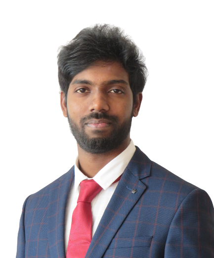

Computational mechanics/materials · FEM
Advanced material modeling
to CAE-based product development.
I’m Dr.-Ing. Vikas Diddige, a PhD-qualified engineer working at the intersection of nonlinear finite element analysis, material modeling, and structural integrity.
I combine automotive CAE experience with numerical method development to investigate how materials and structures respond, deform, and fail.
